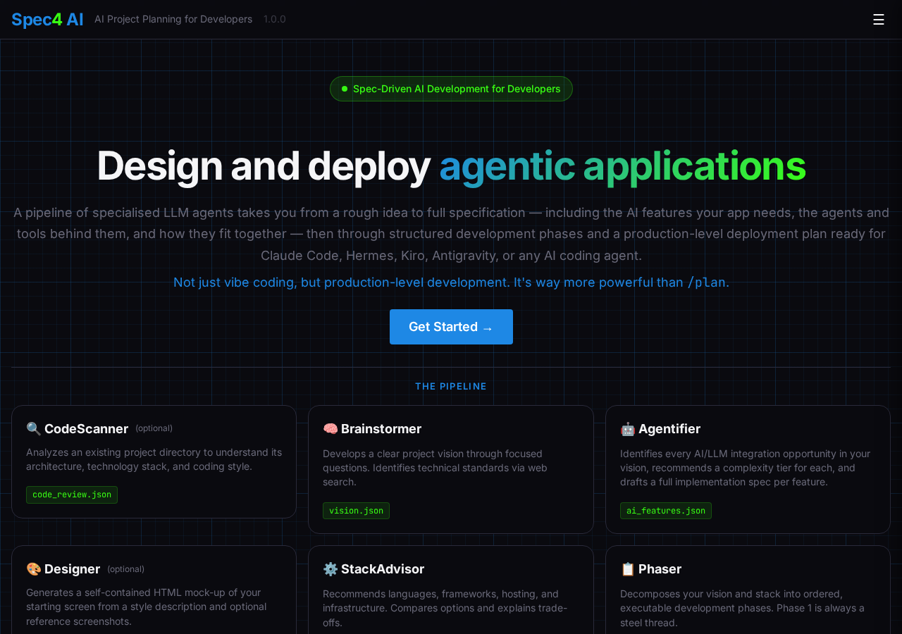
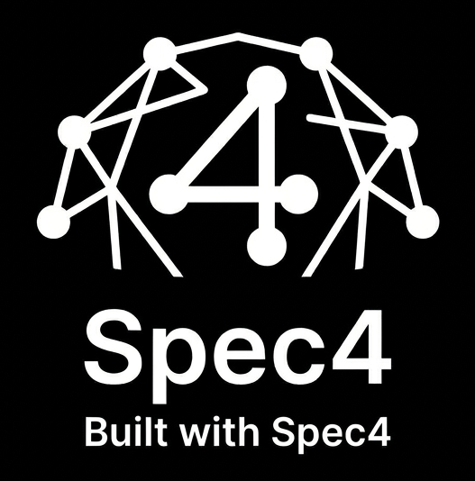

A pipeline of specialized LLM agents takes you from a rough
idea — or an existing codebase — to full specification: the
AI features your app needs, the agents and tools behind them,
and how they fit together. Then through structured development
phases and a production-level deployment plan ready for
Claude Code, Hermes, Kiro, Antigravity, or any AI coding agent.
Not just vibe coding, but production-level development.
It's way more powerful than /plan.
"You've made something really really really cool. I'm almost done with our driver app. Will be field tested by Friday. I don't think I would have built what this is going to become without it."
— Wihan Booyse, Kriterion.ai
You'll need Python 3.12+, uv, and an API key for any supported provider — Anthropic, AWS Bedrock, Cohere, Google Gemini, Mistral, Nebius, or OpenAI. Add a Tavily key if you want the agents to ground their recommendations with web search (optional). Spec4 runs locally at localhost:8050 — your code and your keys never leave your machine. Prefer source? Clone the repo and run make spec4.

Walk through each step of the Spec4 pipeline. Learn how CodeScanner reads your codebase, how Brainstormer defines your vision, how Agentifier specs the AI features your app needs, how Designer mocks your UI, how StackAdvisor recommends your tech stack, how Phaser breaks it into executable phases, and how Deployer plans your path to production.
Agentic coding tools like Claude Code, Hermes, Kiro, and Antigravity have transformed how developers write software. But they can only be as good as the plan they're given. A vague or incomplete prompt leads to a vague or incomplete result — and an expensive amount of back-and-forth. And if your app should have AI inside it, most plans never even ask.
Spec4 bridges the gap between "I have an idea" and "I have a production-ready implementation plan." It structures your thinking, fills the gaps you didn't know existed, and produces machine-readable specs that agentic coders can execute reliably — phase by phase.
.spec4/v0/, v1/, v2/… When your coding agent finishes a round, Spec4 opens the next one — a repeatable, version-over-version development loop, not a one-shot plan.Here's how Spec4 handled a real project brief:
From this single paragraph, Spec4's pipeline clarified the target users, identified missing decisions (offline capability? local language support? integration with existing records systems?), recommended a technology stack, and produced a phased implementation plan — all ready to hand directly to an agentic coding tool.

Built with Spec4 (BWS4) is a living showcase of common AI application patterns — RAG, tool use, and more — presented as a collection of small, self-contained example apps. Under construction
Every one of them was planned and specced with Spec4 — the showcase's own .spec4/v0/ round ships in its repo. It isn't hosted yet, but you can watch it take shape.
Spec4 is free and open source. Bring your own AI provider and model.